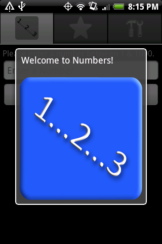
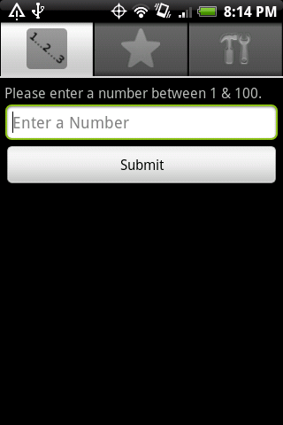
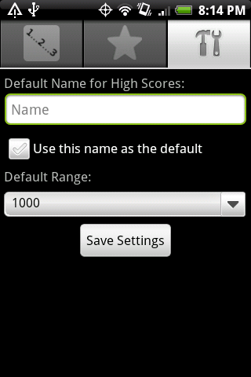

This is a high-low game for the Android OS.  It started as a project for me to try and figure out how to program for the Android, and I have been trying to add more features as I think of them.

I chose to start with a simple game so I could get a handle on the Android OS. Once I got the game implemented, I started adding features that used Android-specific features such as dialog boxes, progress bars, menus etc.

If you have any feature suggestions, let me know!  Either go into the issues tab here and file a new issue, or email me!


Scan this QR code to download the app onto your Android Phone.
<hr />


